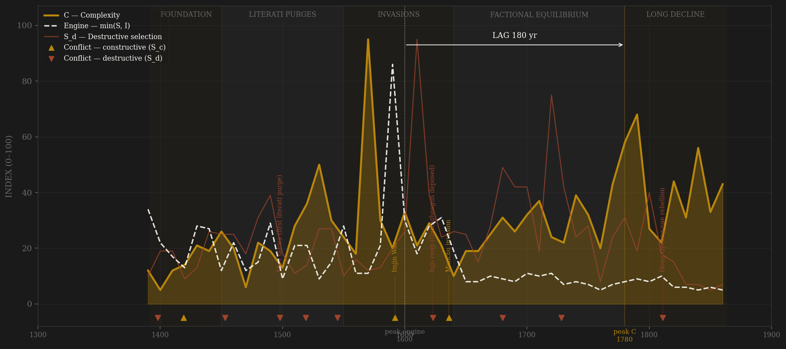
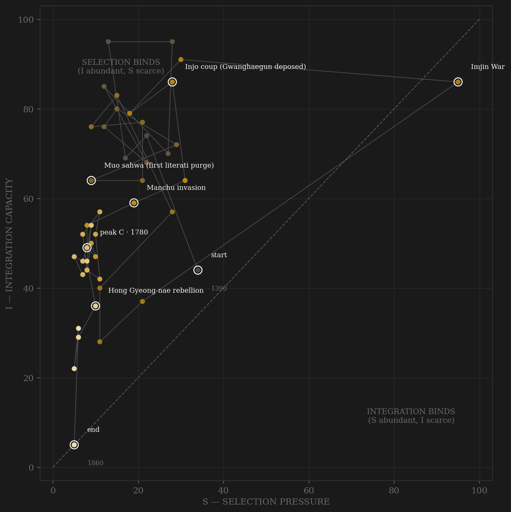

Joseon is the only polity in this study where every input is measured and the test was preregistered: the coding protocol — keyword rates over 351,349 court entries from the Veritable Records — was frozen before any decade-level series was computed, and the deviation log reads zero. The instruments validated blind: external-conflict vocabulary spikes on the wako raids, Imjin (1592–98), and the Manchu invasions; purge vocabulary finds Gwanghaegun and the hwanguk cycles; famine vocabulary peaks on Kyŏngsin (1670s). Nobody told the keywords where history was. Then the test: the engine peaks in the 1600s, complexity — exam and publication activity — peaks in the 1780s under Chŏngjo. Lag: 180 years. The preregistered window said 50–150. FAIL, as frozen, no retuning. The direction is right (max cross-correlation r = 0.434 at +190yr); the magnitude joins Rome (+220) and Venice (+270) in overshooting the window — the pattern the lag-scaling hypothesis (H-LAG-001, preregistered before the next wave) now has to explain on data it has not seen.

The trajectory tells a story of a state that never lacked coordination. Joseon enters already high on the integration axis — the Confucian bureaucratic machine imported whole — and spends nearly five centuries in the selection-binds region below the diagonal. External pressure arrives in two great pulses, Imjin and the Manchu invasions, driving the trajectory briefly rightward before it settles back into low-pressure equilibrium. The long Chŏngjo-era complexity peak happens deep in that quadrant: a civilization compounding culture with almost no selection pressure at all — which is precisely why the engine-to-output lag stretched past what the framework allowed.
Coded by locus and target via frozen keyword classes, not by hand: external-conflict vocabulary (wako, Imjin, Manchu compounds) = S_c; purge, execution, and treason-trial vocabulary = S_d. The mechanical coding removes the historian's thumb from the scale entirely — the cost is granularity (no per-event rationale below), the benefit is that nobody chose which conflicts counted. Events listed here are the anchor episodes the keyword series found on its own, with rates from the audit columns.
| YEAR | CONFLICT | CODE | CODING RATIONALE |
|---|---|---|---|
| 1398 | Princes' strife | Sd | Succession violence at the founding; purge vocabulary elevated in the 1390s audit |
| 1419 | Tsushima expedition | Sc | External anti-wako campaign; conflict vocabulary spike |
| 1453 | Gyeyu coup | Sd | Sejo's seizure; treason-trial vocabulary |
| 1498 | Muo sahwa (first literati purge) | Sd | First of the four great purges; the S_d instrument's calibration events |
| 1519 | Gimyo sahwa | Sd | Jo Gwang-jo's reform faction destroyed |
| 1545 | Eulsa sahwa | Sd | Fourth great purge; factional S_d becomes chronic |
| 1592 | Imjin War | Sc | Japanese invasion — S_c vocabulary maximum of the entire corpus; found blind |
| 1623 | Injo coup (Gwanghaegun deposed) | Sd | Purge vocabulary peak 1610s–20s; the audit's largest internal spike |
| 1636 | Manchu invasion | Sc | Second external pulse; submission at Samjeondo |
| 1680 | Kyŏngsin hwanguk | Sd | Factional reversal purges begin their 50-year cycle |
| 1728 | Musin rebellion | Sd | Armed rising against Yeongjo's legitimacy |
| 1811 | Hong Gyeong-nae rebellion | Sd | Regional rising; the late-corpus banditry/rebellion vocabulary surge |
| COMPONENT | GRADE | BASIS |
|---|---|---|
| S_c — Constructive | ● corpus-measured | External-conflict keyword rate per 1,000 entries, 351,349 entries (5 revised/duplicate annals editions excluded) |
| S_d — Destructive | ● corpus-measured | Purge/execution/treason-trial keyword rate; validates blind on sahwa and hwanguk cycles |
| I — Integration | ● corpus-measured | Administrative throughput (log entry volume) + diplomacy/tribute/trade vocabulary z-score |
| C — Complexity | ● corpus-measured | Exam + printing/publication vocabulary (no keyword overlap with I). Declared limitation: single-corpus dependence — no independent local C proxy exists |
| R — Renewal | — not coded | No local Korean demographic series; left NaN rather than invented |
| E — Entropy | ● corpus-measured | Famine/epidemic/banditry/relief rate; peaks on Kyŏngsin famine (1670s) |
The clean experiment: PROTOCOL.md frozen before analysis (deviation log: zero entries), 48 decades, mechanical keyword coding, audit columns preserved in the composite. Preregistered inflection test: FAIL (180yr > 150yr window). Verdict stands as frozen; the lag joins the H-LAG-001 scaling sample. Rebuild: build_joseon_sicre.py (~2 min), then polity_report.py --slug joseon